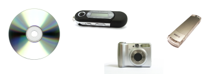
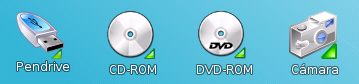
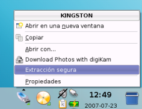

Elementos básicos
Dispositivos de almacenamiento

El manejo de los dispositivos de almacenamiento en Bardinux es muy sencillo. Ya sea una cámara, un pen drive, un CD, un DVD o un reproductor de música, sólo has de conectarlo. Inmediatamente aparecerá un icono en el escritorio y una ventana con las acciones más comunes.

Estos son los iconos que aparecerán en el escritorio cuando los conectes. Sólo con hacer clic en estos podrás acceder a su contenido.
Es MUY IMPORTANTE que antes de desconectar tu dispositivo físicamente hagas clic en su icono, abajo a la derecha, y elijas la opción "Extracción segura" como muestra la imagen, para el caso de un pendrive (para un CD o DVD sería igual, pero eligiendo la opción 'expulsar':

Si el dispositivo tiene una luz de actividad que parpadea, debes esperar a que esta deje de parpadear antes de desconectarlo físicamente del ordenador.
Elementos básicos
 El escritorio de Bardinux
El escritorio de Bardinux
Donde puedes encontrar las aplicaciones, tus archivos, etc. Un recorrido por los distintos elementos del escritorio.
 El menú de aplicaciones
El menú de aplicaciones
Aquí puedes ver un diagrama de las principales aplicaciones disponibles.
 CD's, DVD's, Pen drives y cámaras
CD's, DVD's, Pen drives y cámaras
Como acceder a los contenidos de tu Pen Drive, CDROM, DVD, reproductor MP3, Cámara, etc
 Barra de aplicaciones
Barra de aplicaciones
Aplicaciones activas, elementos adicionales...
 Carpeta de usuario
Carpeta de usuario
Donde se almacenan tus documentos